Georeferencing turns scanned maps into spatial data by corresponding the pixels in a digital map image to real geographic locations. The process emerged from the practice of transforming aerial and satellite photography into usable spatial data (for more detailed background, see “Georeferencing and Georectification” in the GIS&T Body of Knowledge). Today, historians and other humanities researchers georeference maps for things like data creation, change detection, and comparative analysis.
Traditionally, georeferencing requires uploading an image file, like
a JPG or TIFF, to a geographic information
system (GIS) or web client. The output typically includes a map in
GeoTIFF format which can be overlaid on real-world
geographies. You can check out existing Programming Historian
lessons for explanations of these georeferencing workflows in Map
Warper, QGIS
2.0, and KnightLab’s
StoryMap JS.
In this lesson, we introduce the Allmaps platform: an open-source set of tools for curating and georeferencing digital maps.
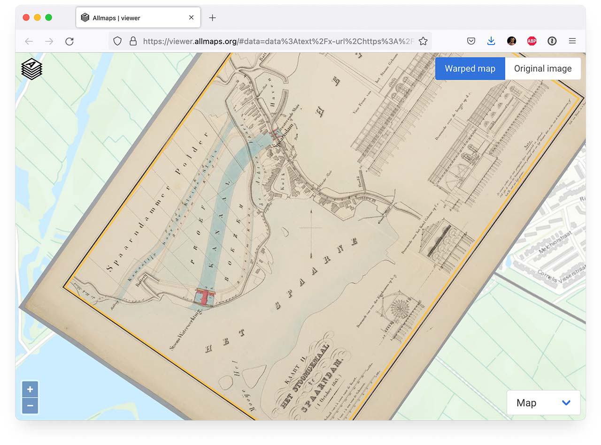
Allmaps is a free, publicly accessible, and web-based solution to georeferencing. Instead of requiring users to upload image files to a GIS or web client, Allmaps fetches image files directly from digital collections and dynamically warps them in a web browser. It’s powered by a simple JSON file—a georeference annotation—which contains all the metadata necessary to warp a map. In addition to providing a simple interface for georeferencing, Allmaps provides a robust set of command-line tools and web-mapping libraries that advanced users can use to extend their research and visualization workflows.
You’ll learn:
There are many reasons why researchers and scholars georeference maps. Georeferenced maps make it easier to view change over time.
Discovery applications like the American Geographical Society Library’s Operation Birds Eye overlay 300 aerial photographs on modern satellite imagery, adding valuable context and enabling comparisons over time. Similarly, at the Leventhal Map & Education Center, the Atlascope tool allows users to explore georeferenced urban atlases in a web map:
Once a digitized map is aligned with geographic coordinates, it becomes possible to:
Traditional georeferencing solutions are built into geographic information systems (GIS) like QGIS or ArcGIS. Although GIS-based georeferencing tools can still be useful for some workflows, they do have a steep learning curve, and in the case of ArcGIS, are quite expensive. This is where the International Image Interoperability Framework (IIIF) comes in: Allmaps’ IIIF-powered georeferencing capabilities make it easier to do more with georeferenced maps, provided you have a basic handle on IIIF.
IIIF (pronounced “triple-eye-eff”) is a set of open standards for delivering high-quality, attributed digital objects online at scale. IIIF provides a consistent way for institutions to share digital images, maps, manuscripts, artworks, and even audio/visual files across different platforms.
Rather than locking media inside specific viewers or software tools, IIIF offers a standardized, flexible way to deliver these resources to any compatible application. This means:
At its core, then, IIIF enables interoperability, making it easier for cultural heritage institutions, educators, and developers to build user experiences around maps, photographs, documents, and other media from all over the world.
This lesson introduces more detail about IIIF than is ultimately necessary to get started georeferencing with Allmaps.
The main problem that IIIF responds to is that digital images can be huge. Even physically small photos can have a large file size when they are stored in a digital repository system and served to a user—and that footprint grows with the dimensions of the physical resource.
Consider the map below, Kaart van het Brugse Vrije by Pieter II Claeissens. It’s physically massive. As Jan Trachet writes, digitizing it required taking dozens of separate photographs and stitching them together in software like Photoshop.
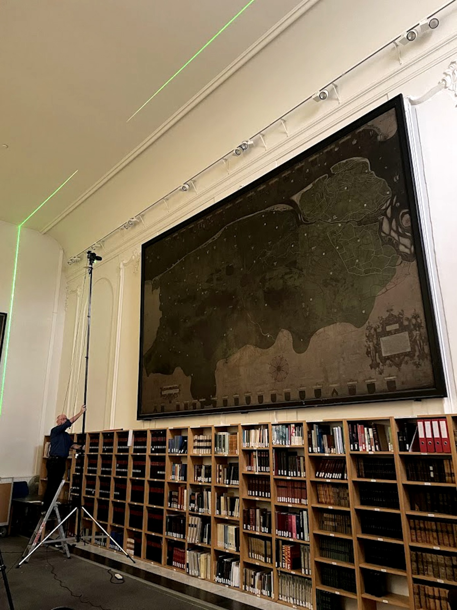
It also takes up many gigabytes of storage. Delivering multiple gigabytes of image data over the web is a pretty big payload—and that large payload is exactly what most libraries and museums are often dealing with.
In short, IIIF provides a solution to this problem of delivering large images over the web.
IIIF divides images into smaller regions of tile pyramids. When a digital repository implements IIIF, it produces tile pyramids that make each digitized image available at different resolutions, preserving the fidelity of deep zoom without having to deal with the payload of a massive file size all at once.
The interactive below, by Jules Schoonman, provides a great visualization for how tile pyramids work. An image is shown on the left, while its corresponding tile pyramid is shown on the right. As you zoom into the image, the relevant section of the tile pyramid is highlighted in gray.
Zoom into the image to try it out:
In practice, IIIF images are usually delivered through viewers like Mirador or OpenSeadragon. Below, take a look at the AGSL’s treasured Leardo Mappamundi, embedded in a Mirador Viewer. Clicking on the expand arrows allows us to view the map in full-resolution detail directly in the browser—no need to download image files.
Open the Leardo Mappamundi comparison in a new page
Allmaps builds on the IIIF protocol to warp IIIF maps directly in a web browser. In order to georeference a map in Allmaps, you need something called a IIIF manifest.
A “manifest” is the prime unit in IIIF. Like the manifest for a plane or a ship, IIIF manifests contain information about their cargo. In our case, the “cargo” includes the pixels of the digital resource, its metadata, and any optional parameters for how the image should be displayed.
Once you have the manifest, you can do a lot with it. Take, for instance, the Leardo Mappamundi we mentioned above. Its digital collection record is:
Tip: Open each of the URLs in a new tab as you go.
https://collections.lib.uwm.edu/digital/collection/agdm/id/538/The Leardo map’s IIIF manifest is listed at the bottom of the page, near the IIIF logo. If you open the link below, you’ll see a big jumble of JSON (JavaScript Object Notation) data:
https://collections.lib.uwm.edu/iiif/info/agdm/538/manifest.jsonThat big JSON jumble is our IIIF Manifest for the Leardo Mappamundi. It contains metadata about the object itself, like the title of the work and its publication date, but it also includes information about the IIIF image, like width and height in pixels.
Open the manifest in a new tab and scroll through its contents. Can you find these values? What other metadata do you see?
Now that you have the manifest, you could point to the full
size image at the URL
https://collections.lib.uwm.edu/digital/iiif/agdm/538/full/full/0/default.jpg—but
we can also tweak this URL, ever so slightly, to deliver a smaller
version of the image:
https://cdm17272.contentdm.oclc.org/iiif/2/agdm:538/full/1200,/0/default.jpgHere, we’ve replaced /full/full/0/ with
/full/1200,/0/, which tells any browser or application
requesting this URL to fetch the image at a maximum resolution of 1,200
pixels wide.
We could also deliver a smaller, zoomed-in crop of the source image
by specifying a two-pixel bounding box, turning
/full/1200,/0/ into
/3416,3568,526,492/1200,/0:
https://cdm17272.contentdm.oclc.org/iiif/2/agdm:538/3416,3568,526,492/1200,/0/default.jpgFinally, we can even pass a variety of parameters like rotation. In
the image below, we’ve added the value 280
/4662,3731,562,772/1200/280/:
https://cdm17272.contentdm.oclc.org/iiif/2/agdm:538/4662,3731,562,772/1200/280/default.jpgAll of these things are possible because of IIIF’s built-in application programming interfaces (or APIs), which allow you to query images according to different parameters in the URL. It’s obviously difficult to manipulate the values in the URL by hand, but thankfully, the presence of an API makes it possible to build applications on top of the IIIF protocol. One example is the Leventhal Center’s IIIF Tools, which provides a user-friendly interface for manipulating the IIIF Image API and constructing different image endpoints.
To test your knowledge of IIIF, try the following challenge:
Allmaps uses these APIs (and others) to fetch IIIF images from digital repository servers and warp them in a web browser. The Allmaps platform consists of two main apps: Allmaps Editor, which allows you to georeference a IIIF map, and Allmaps Viewer, which allows you to view them.
These tools are ideal for large-scale maps such as city, county, state, or country maps, including:
All of the maps in AGSL and LMEC digital collections are IIIF compliant. Additionally, the Allmaps project maintains a list of IIIF map collections across the world. Any of the collections that you see in this list should be easy to work with in Allmaps.
Other websites may require more sleuthing to find the manifest. On the David Rumsey Map Collection, the IIIF manifest is listed under the share menu:
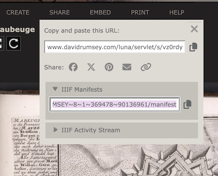
If you’re comfortable installing a browser extension, DetektIIIF can help identify IIIF resources on pages where the manifest link is not visible. If a IIIF image is present on a website, DetektIIIF can usually find its manifest.
Let’s get started with some georeferencing.
First, launch the Allmaps Editor by going to editor.allmaps.org. You can choose a map to georeference by either:
Allmaps uses metadata in the IIIF manifest to fetch image data from the host institution’s servers.
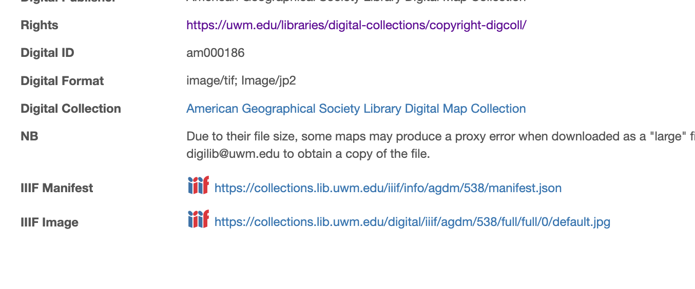
This lesson will use a lot of screenshots from georeferencing this chart of New Zealand, but you should pick a different map to georeference.
The first step is adding a mask. This involves drawing a line around the map areas of the document to exclude the collar or marginalia. The mask identifies parts of the scanned image that you want to georeference. Only parts of the image inside the mask will be warped. In the Allmaps lexicon, one mask defines a “map” on a region of the “image”.
Use the “Draw Mask” tab to add a mask. Click to add points, and double-click to close the polygon. If you mess up, click “Cancel” to start over.
In the figure below, note that the pink line defines the mask and excludes the map collar from the defined map.
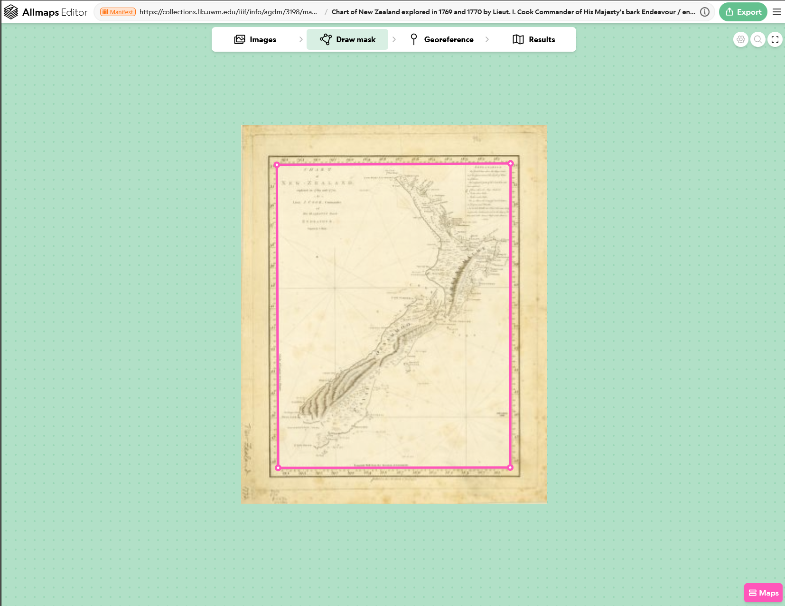
It’s possible your image includes multiple maps! If so, each map gets its own mask.
In the figure below, three maps are defined from a single image: the main map image (labeled 1) and two inset map areas (labeled 2 and 3).

Much of the time, your mask will simply be a rectangle drawn just inside the map’s neatline.
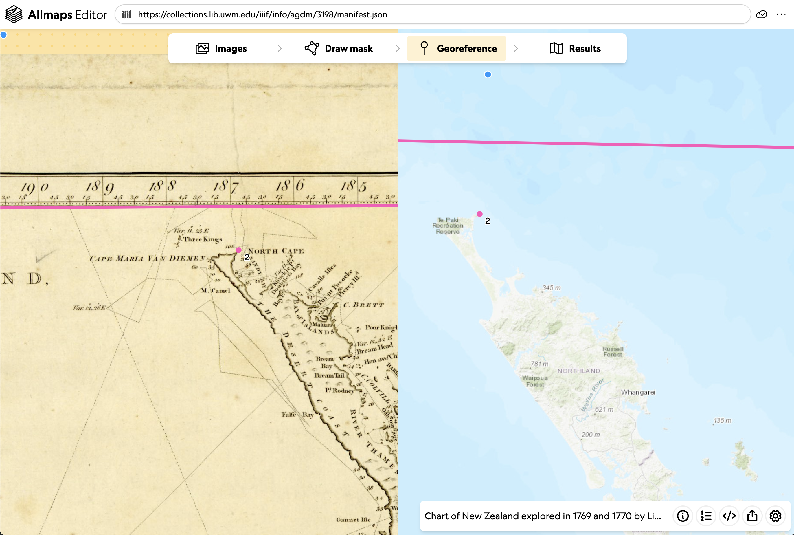
Ground control points (GCPs) guide Allmaps in aligning the scanned image (left side) with real-world geography (right side).
Use the “Georeference” tab to begin placing GCPs.
To create one, find a location that clearly matches on both sides, such as a street intersection, the corner of a recognizable building, or a stable political boundary.
Click the same spot on both images.
In the figure below, note the pink dot labeled 2 on both
sides of the image, in this case an easily identifiable location near
Cape Reinga on the Aupōuri Peninsula of New Zealand.

When placing ground control points—especially for cartographic corpora like urban atlases—consider the following:
These guidelines are adapted from the Leventhal Map & Education Center’s guide to georeferencing with Allmaps.
Remember, landscapes change: roads shift, water levels fluctuate, buildings are razed and replaced.
Behind the scenes, placing GCPs in Allmaps creates a Georeference Annotation, a standard format for storing geospatial information associated with a IIIF image. The Annotation specification is maintained by the IIIF Consortium.
Each point creates a pair of values:
{
"type": "Feature",
"properties": {
"resourceCoords": [3017, 4367]
},
"geometry": {
"type": "Point",
"coordinates": [172.936215, 43.7589394]
}
}Allmaps uses this data to calculate the warping or stretching needed to align the map image in geographic space. Six-digit coordinate precision is probably overkill, but hey, it gives us an excuse to use one of our favorite xkcd comics:

Georeference annotations are automatically created when you draw a mask or place a control point. From Allmaps Editor, here’s how you can locate a map’s georeference annotation:
Here’s the georeference annotation for that chart of New Zealand:
https://annotations.allmaps.org/images/ed34bf1e16463906That ID, ed34bf1e16463906, is called an “Allmaps ID.” It
is unique to the Allmaps data ecosystem. It’s generated by passing the
IIIF manifest through a hashing algorithm that produces a unique,
16-digit alphanumeric identifier.
Open the annotation in a new tab and inspect it. Can you make sense
of what each key and each value are
communicating? Can you locate the resource coordinates and geometry
coordinates?
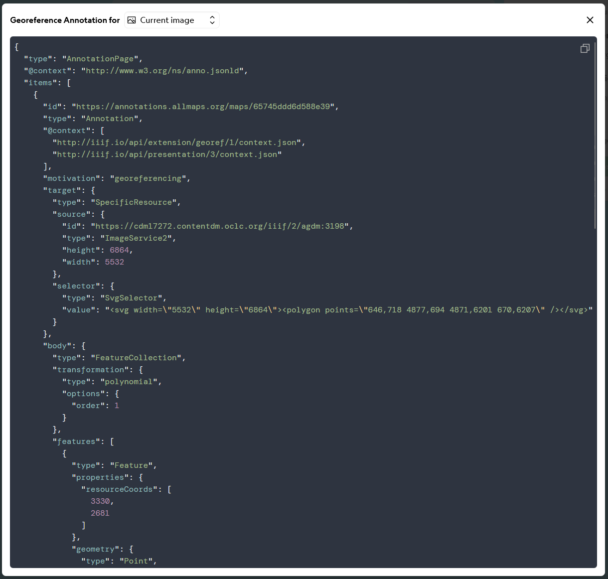
The “Results” tab displays a preview of the map with georeferencing applied. It’s a great way to check alignment and see if you’re on the right track.
Notice in the figure below that the map is displayed with its collar removed beyond the neatline and the shape is no longer rectangular and has taken on a parallelogram shape.
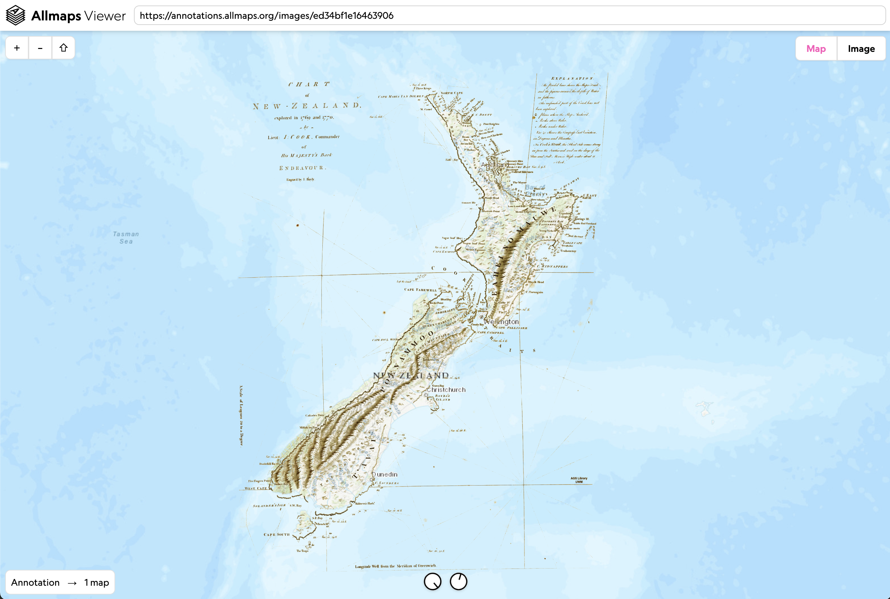
In the upper right, under Export, you’ll see a drawer with more tools:
</> Code button shows the full Georeference
Annotation as a popupOn the bottom right, under Maps you can find:
The Transformation option controls the algorithm Allmaps uses to warp the image from your control points. Different algorithms will produce different results. Some stretch or distort the image more than others, so changing the transformation can change how you interpret the map, not just how it looks.
The Projection option lets you choose the projection used for the map’s geospatial coordinates. These settings are written into the georeference annotation, so they become part of the map data that Viewer, the tile server, and other Allmaps tools read later.
Compare transformation and projection options as different interpretations of the same control points, and pay attention to places where the map stretches, bends, or preserves local detail.
The animation below shows just how much changing the transformation algorithm can impact the overlay.


Click the View in Allmaps Viewer link in the Export menu to continue. Next we will work with the map in Allmaps Viewer.
Allmaps Viewer is used to view georeferenced maps in Allmaps. Similar to the Results tab in Editor, you can see the warped map overlaid on a web map.
Viewer also includes additional tools that let you customize the appearance and functionality of your map. Common tools (found at the bottom of the screen) include sliders that control layer transparency/opacity and background removal.
Background removal is especially useful with historical maps—it removes the blank paper and helps isolate printed geographic content from the scanned page, making overlays easier to interpret.
Viewer is not used to georeference maps. Instead, it’s used for inspecting results and assessing how a warped historical map behaves in relation to modern geography.
The figure below shows a georeferenced map of New Zealand with the background removed.

Allmaps Viewer has some useful keyboard shortcuts:
Allmaps annotation for the Lynn, Massachusetts atlas sheets: https://annotations.allmaps.org/manifests/23379602e8187445
Since these atlas pages were carefully masked, they mosaic almost seamlessly, allowing one to explore the whole atlas at once.
Using M to display the mask lines shows how all the component maps fit together.
When working with multi-sheet objects:
Once you have checked how the map behaves in the viewer, you can also use the same georeferenced map outside Allmaps.
The viewer is useful for inspecting alignment; XYZ tiles make the warped map available as a layer in desktop GIS software.
Allmaps provides a free XYZ tile server, allowing you to bring georeferenced maps directly into GIS software like QGIS. Note: this is not intended for permanent hosting.
In QGIS, use the Add XYZ Layer tool:
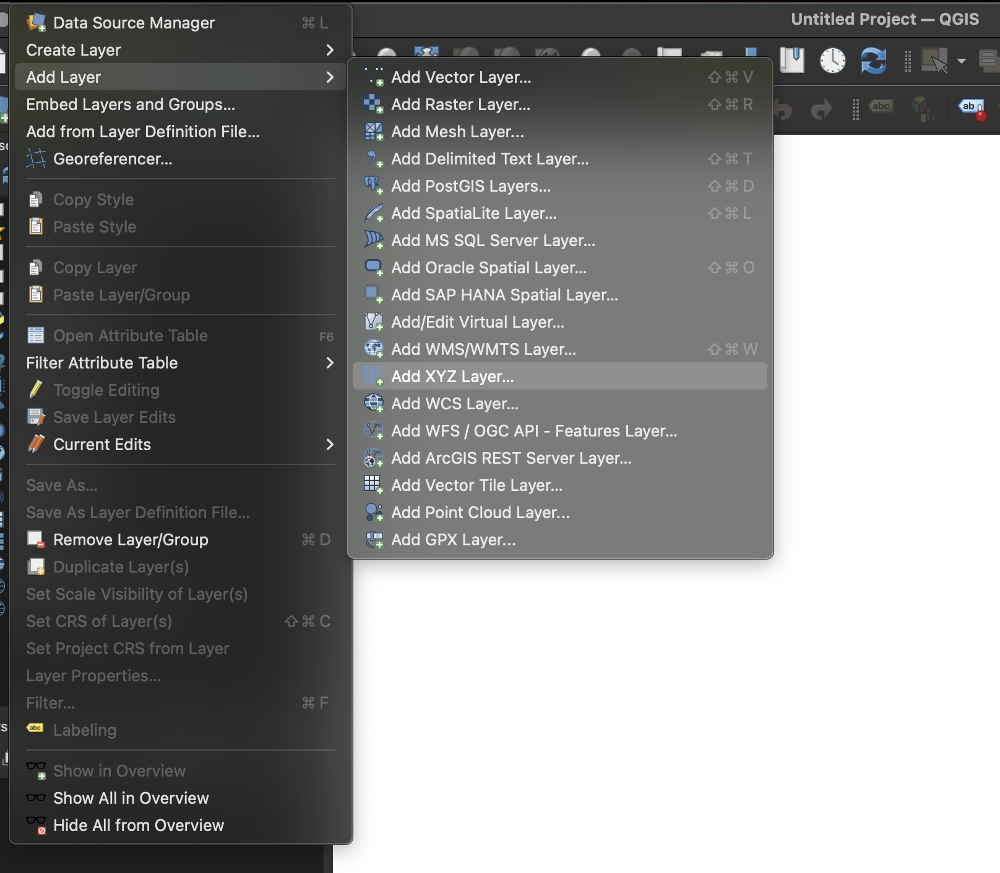
Copy the XYZ Tile URL from the Allmaps Editor Share tools:
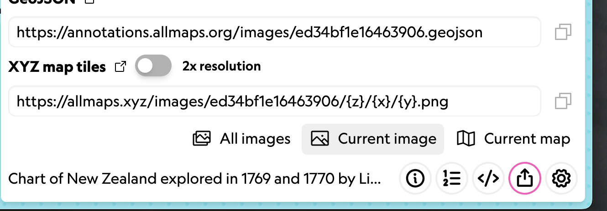
Then create a new XYZ Connection in QGIS and paste in the URL. No other changes are usually needed.

Now you can use your georeferenced map directly in desktop GIS!
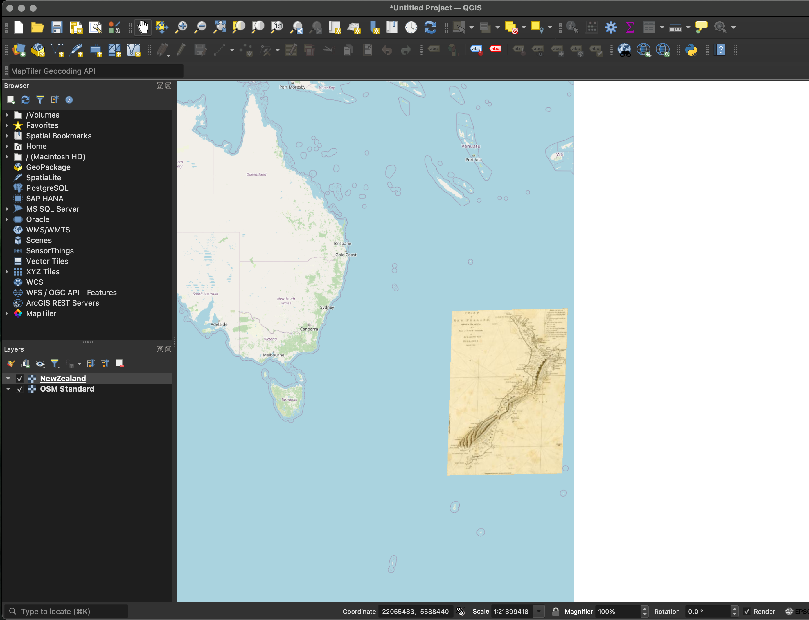
The Allmaps Tile Server is useful for desktop GIS and other software that needs an XYZ tile URL, but it is more costly to run because each requested tile has to be fetched, warped, and returned by a server. The Allmaps Tile Server is intended for testing, so tiles may load slowly, break, or stop working.
When you control the web map, Allmaps Viewer or the Allmaps plugins for OpenLayers and Leaflet are usually more efficient because they can warp IIIF images directly in the browser.
More info on the Allmaps Tile Server is available in this Observable notebook.
So far, the lesson has focused on browser-based tools: finding IIIF resources, georeferencing a map in Allmaps Editor, and inspecting the result in Allmaps Viewer. The next sections move to the command line so you can reuse Allmaps georeferencing data in your own files and workflows.
This portion assumes some familiarity with the command line in a Unix environment (Linux, macOS, or a Unix-like environment on a Windows PC), installing packages, and generating and running scripts from the command line.
Never copy and paste code into your terminal unless you understand what it is doing. This lesson requires installing software such as Allmaps Command Line, Node.js, GDAL, dezoomify-rs, and other dependencies.
Installation and compatibility will vary depending on your operating system, OS version, and shell environment.
macOS and Linux users can skip this section and jump to Linux and Unix.
This lesson uses WSL for Windows because the command-line tools in this section are easiest to install and teach in a Unix-like environment. WSL gives Windows users a Linux shell that behaves much like the macOS and Linux workflows used in the rest of the lesson, which keeps commands, paths, and troubleshooting more consistent. Native Windows workflows are possible, but they require different setup steps.
For more detailed setup instructions, see Microsoft’s Install WSL documentation.
If you don’t have a Linux distribution set up for WSL, install Ubuntu via PowerShell. Ubuntu can also be installed from the Microsoft Store after WSL is enabled, but PowerShell handles both steps in one workflow.
Open PowerShell as an administrator and install WSL:
wsl --installThis installs Ubuntu by default. If WSL is already installed but Ubuntu is not, you can install Ubuntu explicitly:
wsl --install -d UbuntuOpen Ubuntu from the Windows Start menu. When the Ubuntu prompt appears, continue with the Linux and Unix instructions below.
The commands below are written for Ubuntu and Debian-based
environments, including Ubuntu on WSL, that use the apt
package manager. Other Linux or Unix-like systems may use different
package managers, package names, and compilation methods.
Refresh the package list and apply available system updates before installing new tools:
sudo apt update
sudo apt upgradeInstall the current long-term support (LTS) version of Node.js using the standard installer or package manager for your operating system.
On Ubuntu, Debian, or Ubuntu on WSL, you can use the instructions from Node.js:
https://nodejs.org/en/download
Use Node.js 22 or newer, preferably the current LTS version.
After installation, confirm that Node.js and npm are available:
node --version
npm --versionIf both commands print version numbers, continue with the next step.
Install GDAL:
sudo apt install gdal-bin libgdal-devInstall Homebrew if not already installed.
Refresh Homebrew’s package list:
brew updateInstall Node.js. You can use the installer from Node.js or Homebrew.
brew install nodeAfter installation, confirm that Node.js and npm are available:
node --version
npm --versionIf both commands print version numbers, continue with the next step.
Install GDAL:
brew install gdalInstall the Allmaps CLI:
npm install -g @allmaps/cliConfirm that Allmaps CLI and GDAL are available:
allmaps --help
gdalinfo --versionOne example in this portion uses a small local web server to preview files in the browser. If Python 3 is already installed, you can use its built-in server.
Alternatively, because this lesson already uses Node.js and npm, you
can use npx http-server.
The GeoJSON workflow uses jq to inspect geometry
types.
The GeoTIFF workflow uses jq to inspect IIIF Image API
metadata and dezoomify-rs to download a full-resolution
image when the source image dimensions do not match the Allmaps
annotation.
On Ubuntu/Debian or Ubuntu on WSL, install jq:
sudo apt install jqOn macOS, install jq with Homebrew:
brew install jqdezoomify-rs
is used for full image extraction.
On Ubuntu/Debian or Ubuntu on WSL, install Rust and then install
dezoomify-rs with Cargo:
curl --proto '=https' --tlsv1.2 -sSf https://sh.rustup.rs | shLoad Cargo in your current terminal session:
source "$HOME/.cargo/env"Confirm Cargo is available:
cargo --versionInstall dezoomify-rs:
cargo install dezoomify-rsOn macOS, install dezoomify-rs with Homebrew instead:
brew install dezoomify-rsConfirm the tools are available:
jq --version
dezoomify-rs --helpIf installation fails, the most likely missing pieces are Node.js,
npm, GDAL, Rust/Cargo, or small command-line utilities such as
jq. After installing a new tool, you may need to restart
your terminal before the command is available.
The georeference metadata produced by Allmaps Editor can be used to convert geospatial coordinates to pixel coordinates to draw GeoJSON on the original unwarped map.
In the command-line examples below, jq is a small tool
for inspecting and reshaping JSON data.
For the main walkthrough, this example overlays the full medieval road network from around 1300 on the 1821 AGSL map of Paris.
It is helpful to keep a record of the URLs for the resources you are working with for easy reference, particularly if you’re using an example other than the one provided.
| Resource | Location / URL |
|---|---|
| AGSL Map of Paris, 1821 | https://collections.lib.uwm.edu/digital/collection/agdm/id/1550/ |
| IIIF Manifest URL | https://collections.lib.uwm.edu/iiif/info/agdm/1550/manifest.json |
| Viewer URL | https://viewer.allmaps.org/?url=https%3A%2F%2Fannotations.allmaps.org%2Fimages%2Fadeae8a56aaf59fb |
| Georeference annotation | https://annotations.allmaps.org/images/adeae8a56aaf59fb |
| Allmaps Image ID | adeae8a56aaf59fb |
| Image ID URL | https://cdm17272.contentdm.oclc.org/iiif/2/agdm:1550 |
| Image Dimensions | 10784 x 6941 |
| Original source file | assets/voiries1300_2009.json |
| Lesson-ready file | assets/voiries1300_2009_clean.json |
| Original ALPAGE source page | https://alpage.huma-num.fr/ancient-urban-fabric/ |
| Original ALPAGE download | https://alpage.huma-num.fr/documents/ressources/shapes/52-voieries1300_2009.zip |
The road network was originally published by ALPAGE as “Road network in 1300” by Caroline Bourlet and Anne-Laure Bethe.
Download original data (optional)
The local file assets/voiries1300_2009.json is derived
from that source. A cleaned teaching version is included,
assets/voiries1300_2009_clean.json, where each
MultiLineString has already been split into separate
LineString features.
Allmaps is not changing the GeoJSON into a new map projection for display in a web map. It is converting the GeoJSON into image-space coordinates so the shapes can be drawn directly on the scanned map image.
For this example, we need three things:
assets/annotation.json, a frozen copy included with the
lesson package.assets/voiries1300_2009_clean.json.annotation.jsonBecause Allmaps georeferencing data can be edited, this lesson uses a
frozen copy of the Paris georeference annotation included at
assets/annotation.json.
That local copy was downloaded from the Allmaps annotations service using the Paris map’s IIIF manifest URL:
The file assets/annotation.json contains:
You can inspect it with:
allmaps annotation parse assets/annotation.jsonYou should see output like this:
[
{
"@context": "https://schemas.allmaps.org/map/2/context.json",
"type": "GeoreferencedMap",
"id": "https://annotations.allmaps.org/maps/2543dadd9c2fa8b1",
"created": "2026-04-03T16:46:18.241Z",
"modified": "2026-04-03T16:46:18.241Z",
"resource": {
"id": "https://cdm17272.contentdm.oclc.org/iiif/2/agdm:1550",
"width": 10784,
"height": 6941,
"type": "ImageService2",
"partOf": [
...That command translates the annotation into Allmaps’ internal
GeoreferencedMap format. This is the moment where the CLI
learns how the Paris image relates to real-world coordinates.
Before transforming the GeoJSON, inspect the prepared file in two
ways. First, open https://geojson.io in
your browser and use the open/import function to load
assets/voiries1300_2009_clean.json.
You should see the medieval road network drawn over the modern basemap. This confirms that the file is valid GeoJSON with geographic longitude/latitude coordinates.
Then use jq to check what kinds of geometry appear in
the file:
jq -r '[.features[].geometry.type] | unique[]' 'assets/voiries1300_2009_clean.json'For this dataset, the result is:
LineStringThis matters because the next steps assume each feature can be transformed and drawn as a line, rather than as mixed geometry types that would need extra cleanup or styling.
To keep this lesson focused, the GeoJSON cleanup has already been
done. The lesson package includes both the cleaned
FeatureCollection and a prepared geometry stream for the
CLI:
assets/voiries1300_2009_clean.jsonassets/voiries1300_2009_clean.geometries.ndjsonThe second file contains one geometry per line, ready to be piped
into the local Allmaps CLI. .ndjson is a Newline Delimited
JSON file.
Now we can run the actual Allmaps transformation:
allmaps transform geojson \
-a assets/annotation.json \
< assets/voiries1300_2009_clean.geometries.ndjson \
> voiries1300_2009.svgIf this runs without error, expect not to see anything output to your shell.
This command is worth unpacking carefully:
transform geojson takes geographic geometry and
converts it into resource coordinates-a assets/annotation.json supplies the georeference
annotation< assets/voiries1300_2009_clean.geometries.ndjson
sends the prepared geometries into the command through standard
input> voiries1300_2009.svg saves the transformed output
as SVG\ is a line continuation character. It tells the shell
to treat the next line as part of the same command.The result is not new GeoJSON. It is an SVG graphic whose coordinates match the pixel grid of the 1821 Paris image.
Once voiries1300_2009.svg exists, the hard part is done.
You now have:
For a quick visual check, make a small web page. The page creates an SVG with the IIIF image first, then adds the transformed road lines on top.
From assets/annotation.json, we know the original image
dimensions:
"resource": {
"id": "https://cdm17272.contentdm.oclc.org/iiif/2/agdm:1550",
"width": 10784,
"height": 6941,
...Create a file named paris-road-overlay.html (in the same
directory as voiries1300_2009.svg) that contains the
content below:
<!doctype html>
<html lang="en">
<head>
<meta charset="utf-8" />
<title>Paris road overlay</title>
<style>
body {
margin: 0;
}
svg {
display: block;
width: 100vw;
height: auto;
}
</style>
</head>
<body>
<div id="map"></div>
<script>
const width = 10784
const height = 6941
const imageUrl =
'https://cdm17272.contentdm.oclc.org/iiif/2/agdm:1550/full/full/0/default.jpg'
// Use fetch() to request the file voiries1300_2009.svg
async function main() {
const transformedSvg = await fetch('voiries1300_2009.svg').then(
(response) => response.text()
)
// Take the SVG generated by Allmaps, remove its outer wrapper
const roadLines = transformedSvg
.replace('<svg xmlns="http://www.w3.org/2000/svg">', '')
.replace('</svg>', '')
// Style the road lines in cyan for high contrast
.replaceAll(
'<polyline ',
'<polyline style="stroke: #00ffff; fill: none; stroke-width: 10; stroke-linecap: round; stroke-linejoin: round;" '
)
// Find the empty map container, fill it with one SVG containing the Paris map image plus the transformed road overlay.
document.querySelector('#map').innerHTML = `
<svg viewBox="0 0 ${width} ${height}" width="${width}" height="${height}">
<image href="${imageUrl}" width="${width}" height="${height}" />
${roadLines}
</svg>
`
}
main()
</script>
</body>
</html>This HTML page loads the original IIIF image, reads the SVG created by Allmaps, styles the road lines, and draws both layers together in the same pixel coordinate space.
Because the page uses fetch() to load
voiries1300_2009.svg, open it through a small local web
server.
If Python 3 is installed, use its built-in server:
python3 -m http.server 8000Alternatively, use Node/npm:
npx http-server . -p 8000Then open http://localhost:8000/paris-road-overlay.html
in your browser. You should see the 1821 Paris map with the medieval
road network drawn over it as high-contrast cyan lines.
Allmaps gives us a transformation between geographic coordinates and map image pixels. In this example, we use that transformation to move GeoJSON into the image’s own coordinate space, then draw the resulting SVG on top of the original IIIF image.
In the previous section, you used the Paris annotation to transform GeoJSON into image-space SVG. Now you will use the same annotation to generate a georeferenced Cloud Optimized GeoTIFF (COG). This format is commonly used for web maps and allows efficient access to large raster datasets.
For an introduction to COGs and how they enable efficient, web-based access to raster data, see https://cogeo.org/.
If you are working through this section with the lesson’s Paris
example, use the frozen annotation at
assets/annotation.json. If you are using a different map,
use the annotation for that map instead.
allmaps fetch full-image "https://cdm17272.contentdm.oclc.org/iiif/2/agdm:1550"
ls -lh *.jpgFor this example, the downloaded file should be named
adeae8a56aaf59fb.jpg. If your file has a different name,
rename it before continuing:
mv current-filename.jpg adeae8a56aaf59fb.jpgBy default, allmaps fetch full-image may not download
the highest-resolution version.
To see which sizes the IIIF server can provide, inspect the image service metadata:
curl -s https://cdm17272.contentdm.oclc.org/iiif/2/agdm:1550/info.json | jq '.sizes'For this example, the largest size listed should be
10784 x 6941, matching the dimensions in the Allmaps
annotation. If your local JPEG is smaller than the largest size, it will
not match the pixel coordinates in the Allmaps annotation. In that case,
use dezoomify-rs to download the full-resolution image:
dezoomify-rs "https://cdm17272.contentdm.oclc.org/iiif/2/agdm:1550" full.jpg
mv full.jpg adeae8a56aaf59fb.jpgcat assets/annotation.json | allmaps script geotiff > paris_geotiff.shThis will generate a shell script file paris_geotiff.sh
that you will run soon.
The generated script expects a specific filename; if yours differs, it will fail.
Open the script in VS Code or your text editor of choice:
# Visual Studio Code:
code paris_geotiff.sh
# nano
nano paris_geotiff.sh
# etc.Look for this block near line 66:
gdalwarp \
-of COG -co COMPRESS=JPEG -co QUALITY=75 \
-dstalpha -overwrite \
-r cubic \
-cutline ./adeae8a56aaf59fb_2543dadd9c2fa8b1.geojson -crop_to_cutline -cutline_srs "EPSG:4326" \
-s_srs 'EPSG:3857' \
-t_srs 'EPSG:3857' \
-ts 9819 6706 \
-order 1 \
./adeae8a56aaf59fb_2543dadd9c2fa8b1.vrt \
./adeae8a56aaf59fb_2543dadd9c2fa8b1-warped.tifThis command uses gdalwarp
to apply the georeferencing from the annotation and generate a
georeferenced raster.
Before running the script, make the following adjustment:
Remove -cutline_srs flag. This option
is not supported in all GDAL versions and may cause the script to
fail.
Before:
-cutline ./adeae8a56aaf59fb_2543dadd9c2fa8b1.geojson -crop_to_cutline -cutline_srs "EPSG:4326" \
After:
-cutline ./adeae8a56aaf59fb_2543dadd9c2fa8b1.geojson -crop_to_cutline \
If you have sufficient available memory (RAM), you can speed up
processing by adding -multi -wm 2048. On low-memory
systems, this may cause the command to fail.
Add -multi -wm 2048 to the
gdalwarp command.
Each line in a multi-line command must end with \,
except the final line. If a line is missing \, the command
will terminate early and cause errors such as ‘command not found’ or ‘No
target filename specified’.
Your updated gdalwarp command block should read like
this:
gdalwarp \
-of COG -co COMPRESS=JPEG -co QUALITY=75 \
-dstalpha -overwrite \
-r cubic \
-cutline ./adeae8a56aaf59fb_2543dadd9c2fa8b1.geojson -crop_to_cutline \
-multi -wm 2048 \
-s_srs 'EPSG:3857' \
-t_srs 'EPSG:3857' \
-ts 9819 6706 \
-order 1 \
./adeae8a56aaf59fb_2543dadd9c2fa8b1.vrt \
./adeae8a56aaf59fb_2543dadd9c2fa8b1-warped.tifSave the script file:
VS Code: File > Save or Ctrl+S to save.
nano: Ctrl+O to write out (save), Enter to confirm filename, Ctrl+X to exit nano
vim: Esc, then type :wq and
Enter to save and quit
There is an
issue related to the -cutline_srs flag on the Allmaps
repository.
bash paris_geotiff.shIf the script runs successfully, the output file is now georeferenced using the control points from the Allmaps annotation.
Troubleshooting script failures and errors:
gdalinfo *-warped.tifCheck for the following in the output:
EPSG:3857 — confirms the map is in Web MercatorSize is ... — shows the pixel dimensions of the output
imageLAYOUT=COG — confirms the file is a Cloud Optimized
GeoTIFFYou do not need to understand the full output; just confirm these values appear.
You have now generated a georeferenced GeoTIFF from an Allmaps annotation. This file can be used in GIS software or served as a web-accessible raster.
Allmaps provides three different libraries for loading georeferenced maps as web map layers. You can use Leaflet, OpenLayers, or MapLibre.
This section introduces the Allmaps Leaflet plugin. Once you understand this workflow, the OpenLayers and MapLibre options follow a similar pattern.
The Allmaps Leaflet plugin, described in greater detail in this Observable Notebook as well as the official Allmaps documentation, is distributed via npm.
The assets/allmaps-leaflet-demo folder in this lesson
package contains three files that provide a minimal working demo of the
Allmaps Leaflet plugin in a simple Leaflet web map. Those files are:
index.html: the web page structure for our simple web
mapscript.js: the necessary JavaScript for creating a
Leaflet map with two layers, a base map and an Allmaps overlaystyle.css: a CSS file that makes the map visibleOpen the assets/allmaps-leaflet-demo folder in a text
editor like VS Code. If need be, install the “Live Server” extension by
Ritwick Dey, which allows you to view the web map as local files in a
web browser. You can install the extension by searching “Live Server” in
the “Extensions” tab (the little building blocks) of VS Code.
If you click “Go Live” in the bottom right-hand corner of VS Code, the Leaflet web map should open in your default web browser.
The rest of this section explains how the code works. We will focus on the HTML, JavaScript, and CSS needed to understand this Allmaps example.
If you want to learn more about Leaflet, check out these Programming Historian lessons by Kim Pham on geocoding and Stephanie J. Richmond and Tommy Tavenner on maps of correspondences.
Open the index.html file. This file contains the
structure for our web page.
The head tags contain a lot of important information.
That’s where we’re actually fetching all the Leaflet code, as well as
loading our local files.
Line 8 loads the style.css file:
<link rel="stylesheet" href="style.css" />Lines 11 and 12 load Leaflet and the Allmaps Leaflet plugins:
<script src="https://unpkg.com/leaflet@1.7.1/dist/leaflet.js"></script>
<script type="module" src="https://cdn.jsdelivr.net/npm/@allmaps/leaflet/dist/bundled/allmaps-leaflet-1.9.umd.js"></script>Line 15 loads Leaflet’s external CSS library:
<link rel="stylesheet" href="https://unpkg.com/leaflet@1.7.1/dist/leaflet.css" />And finally, line 18 loads our local script.js, where we
are actually creating the web map:
<script type="module" src="script.js"></script>The body tags contain a minimal structure for the map
itself:
<body>
<div id="wrapper">
<h1>Hi, Allmaps Leaflet Plugin!</h1>
<div id="map"></div>
</div>
</body>Here, <div id="wrapper"> creates a nice container
for our map by applying these CSS values to the page…
#wrapper {
position: absolute;
left: 0;
right: 0;
top: 0;
bottom: 0;
display: flex;
flex-direction: column;
}… and then, <div id="map"></div> creates a
fullscreen map inside of our parent div, according to this
CSS:
#map {
width: 100%;
height: 100vw;
z-index:1;
}Try opening the style.css file to inspect this stuff
directly, or even tweaking some of the values as a matter of
experimentation.
The Allmaps Leaflet plugin uses georeference annotations to overlay maps. We’ll be using this georeference annotation…
https://annotations.allmaps.org/manifests/cfb327e4b43395e3… which corresponds to this map of Boston:
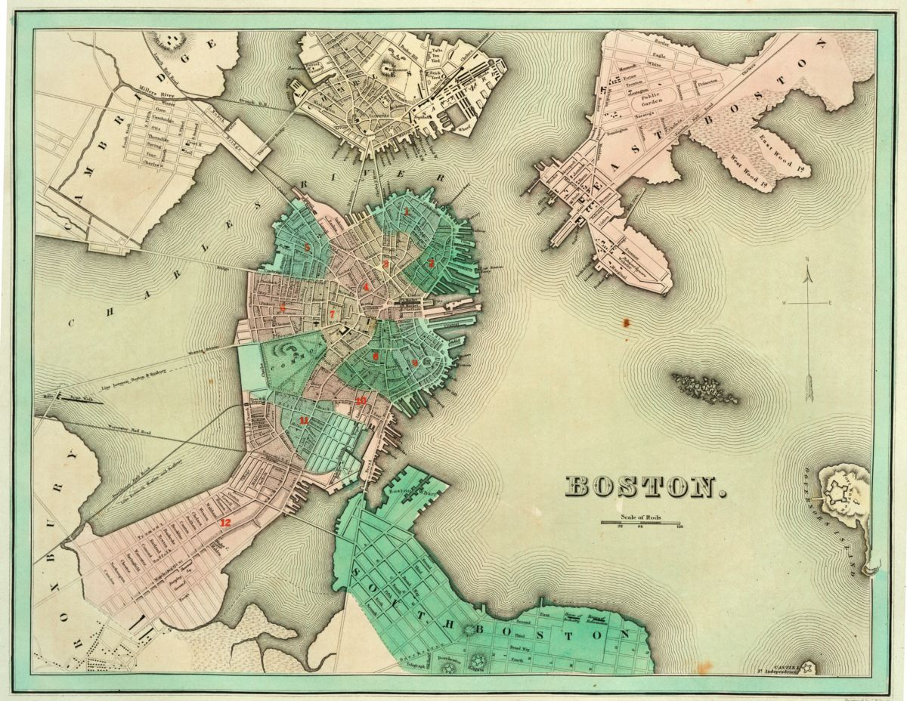
To instantiate a Leaflet map, define a variable as
L.map("map", { ... }), where ... includes the
map’s parameters, like where it’s centered, its starting zoom, and other
features.
We define our map like this:
const map = L.map("map", {
center: [42.3518, -71.05],
zoom: 13,
minZoom: 7,
maxZoom: 24,
zoomControl: false,
});We want to add a base map to our Leaflet map. We’ll use OpenStreetMap’s free XYZ tiles, provided at https://tile.openstreetmap.org/{z}/{x}/{y}.png.
First, we define options for the XYZ tiles:
let tileLayerDetails = {
tileSize: 512,
zoomOffset: -1,
minZoom: 14,
maxZoom: 24,
crossOrigin: true,
};Then, we can add it to the map with a single line of code:
let streets_base = L.tileLayer("https://tile.openstreetmap.org/{z}/{x}/{y}.png", tileLayerDetails).addTo(map);Next, now that our map has been instantiated and contains an OpenStreetMap base, we define two new variables:
annotationUrl contains the URL of the georeference
annotationWarpedMapLayer creates a new
WarpedMapLayer and adds it to the maplet annotationUrl = 'https://annotations.allmaps.org/manifests/cfb327e4b43395e3';
let warpedMapLayer = new Allmaps.WarpedMapLayer(annotationUrl).addTo(map);In a vanilla
JS setup like ours, note that you must call the
WarpedMapLayer method by prefixing it with
Allmaps.. This syntax would be slightly different—and it
would more closely resemble the code snippets found on the @allmaps/leaflet
npm documentation—if you installed it with npm and used
it in a front-end framework like Svelte, Vue, or React.
At this point, the map should display the georeferenced overlay.
All that’s left is to create a layer list, which allows us to toggle the map’s visibility on and off, with these three lines of code:
let base = { "OpenStreetMap": streets_base };
let overlay = { "Allmaps overlay": warpedMapLayer };
let layerControl = L.control.layers(base, overlay).addTo(map);In Leaflet-speak, these are called “layer controls,” and you can read more about them here.
Try adding different annotations (just note you’ll have to update the
center array, which is hard-coded to a lat/long pair for
Boston).
{kind=link}
{kind=link}